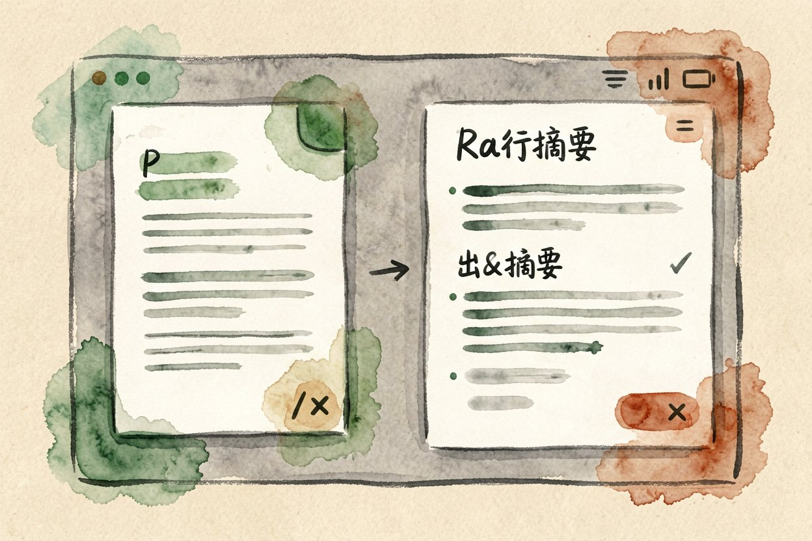

AI 读文献是什么：把长论文交给模型快速摘要
一篇论文几十页看不动？用 AI 读文献，把长文档喂给模型，几分钟就能拿到结构化的摘要和要点。
AI 读文献是本文的核心主题，下面详细介绍如何使用。
AI 读文献是什么：把长文档交给模型嚼
AI 读文献，是把一篇或多篇长文档上传给模型，让它先读完，再按你的问题吐出摘要、要点和对比。你不用从头逐字啃，先拿结构再决定精读哪段。和AI 会议纪要工具是同类能力，只是对象从会议转到论文。
它和普通搜索不同。搜索是去网上找答案，读文献是蹲在你给的材料里答，不跑题、不乱编外部信息。材料越聚焦，回答越靠谱。模型像雇了个读得快的研究生，先帮你画出地图，路还得自己走。它也不会替你下结论，只把材料摊开，判断仍归你。
它最适合哪类材料

长论文、行业报告、产品文档、合同这类「又长又密」的材料最合适。你只想抓研究问题、方法、结论，不想被术语淹。短帖子和新闻没必要，直接看更快，杀鸡用不上这把刀。读外文论文尤其省，术语先铺平再精读，卡生词的时间砍掉大半。资料一多它就显本事，人工翻十篇的功夫它先给地图。
一次传三到五篇做对比也很好用，让模型说清它们观点异同。和AI 思维导图教程配合，先摘要再导图，逻辑更清楚。读文献不是为了不读，是为了把通读时间砍掉，把精力留给精读。
用 NotebookLM 做第一份摘要
把文档传进 NotebookLM，它会自动生成概览和要点，你再追问细节。先问大框架，再钻具体方法，别一上来就问细枝末节。上传时选对文件，最终稿别传草稿，版本错了结论全歪。
提问示例：
请总结这篇论文的研究问题、方法、结论，
用三点列出，并标出它和前人的不同。拿到摘要后挑一段你最关心的精读原文，效率最高。别全信摘要跳过原文，摘要是地图不是终点。NotebookLM 胜在「基于你的资料答」，比通用搜索不易跑题。
补充：AI 读文献的详细用法可参考上文步骤。
补充：AI 读文献的详细用法可参考上文步骤。
补充：AI 读文献的详细用法可参考上文步骤。
和自己做笔记的差别
自己做笔记慢但记得牢，适合要深挖的领域。AI 读文献快但浅，适合先广后精地扫文献。两者不冲突，先用模型缩小范围，再对重点篇手动精读。研究生阶段这招最省时间，文献量大的时候尤其明显。
模型还会帮你把术语铺平，读外文材料尤其省事。和NotebookLM 评测里说的那样，它胜在「基于你的资料答」，不乱引。但它不替你思考，观点提炼仍要靠你，别把模型输出当自己的理解。
关于AI 读文献，建议结合实操理解，多看多试。别把 AI 读文献当成免读借口。它砍的是通读时间，不是思考时间，关键结论仍以你亲自核实为准。引用前一定回看原句，转述错了比不读更糟。别跳过原文就引用，错一处可能误导整篇。
AI 读文献的最佳实践见上文详细步骤，别错过核心要点。 !尾图读文献要点
{kind=link}
本文信息核对于 2026-08-24。AI 产品的价格、免费额度与功能变动频繁，实际以各工具官网当前说明为准。